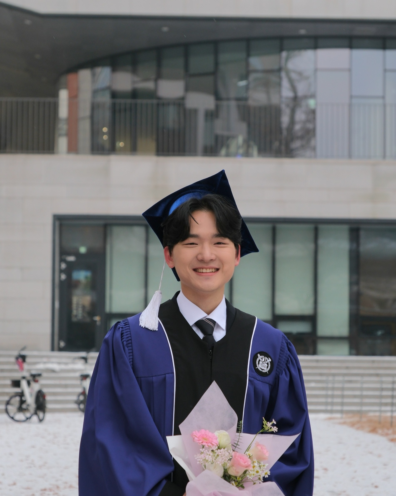

Diffusion-based Language Generation
Exploring alternative generative paradigms for language models, including masked diffusion models and hidden-state diffusion interfaces.
Language Models · Diffusion · AI Agents · Reasoning
I study how to improve language models by understanding their internal mechanisms and reasoning abilities, exploring alternative generative paradigms such as diffusion models, and developing agents that can act in real-world settings.
I am a master's student in Data Science at Seoul National University and received my B.S. in Mathematics from Seoul National University. This website collects my research, papers, education, awards, experience, and contact links.

About
I am a master's student in Data Science at Seoul National University and a member of HOLI LAB. I received my B.S. in Mathematics from Seoul National University. My research focuses on large language models, representation learning, diffusion models, and interpretable AI.
I study how language models organize information internally and how their mechanisms change through training, post-training, and architectural intervention. My work connects mechanistic analysis, representation learning, diffusion-based generation, and faithful reasoning. I am also interested in agents and practical AI systems that bring research ideas into real-world applications.
Research Interests
Exploring alternative generative paradigms for language models, including masked diffusion models and hidden-state diffusion interfaces.
Understanding how language models organize information internally and how their mechanisms change through training, post-training, and adaptation.
Building and evaluating tool-using, reliable, and autonomous systems that connect language models to real-world workflows.
Studying reasoning abilities, faithful explanations, and evaluation methods for language and multimodal models.
Analyzing useful structure in high-dimensional representations, including style, values, and semantic organization in model embeddings.
Selected Papers
Injin Kong, Hyoungjoon Lee, Yohan Jo · arXiv preprint · 2026
Studies where diffusion mechanisms should enter language models through geometry-guided hidden-state replacement.
Naeun Lee, Hyunjong Kim, Sunghwan Choi, Injin Kong, Yohan Jo · arXiv preprint · 2026
Evaluates whether multimodal large language models can reason effectively and faithfully about visual persuasion.
Injin Kong, Hyoungjoon Lee, Yohan Jo · arXiv preprint · 2026
Studies how model mechanisms shift during post-training from autoregressive language models to masked diffusion language models.
Jongwook Han, Jongwon Lim, Injin Kong, Yohan Jo · ICML 2026
Investigates how large language models express values through intrinsic behavior and prompt-induced responses.
Injin Kong, Shinyee Kang, Yuna Park, Sooyong Kim, Sanghyun Park · arXiv preprint · 2024
Proposes a VAE-based approach for extracting style information from text embeddings using a parallel dataset.
CV
Seoul National University
Seoul National University
Yonsei University
Hana Academy Seoul
CJ Logistics Future Technology Challenge · Image-Based Volume Estimation of Parcels
Yonsei University · Highest Academic Achievement
Korean Mathematical Olympiad (KMO)
Earth Science Competition · Hana Academy Seoul
Mathematics Research Presentation Contest · Hana Academy Seoul
Aardvark
Black Label Geometry
Contact
For research discussions, collaboration, or opportunities, feel free to reach out by email.